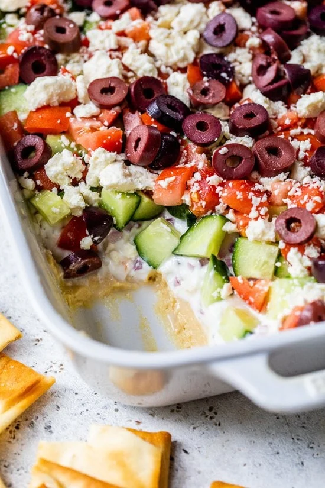

Greek Dip Salad
I love this Greek Dip Salad for its Mediterranean flavors
and light and refreshing taste. It's also just so easy to whip up in a
hurry before a party or BBQ.
"This salad is great with pita chips or
chopped mixed veggies" Iris, Boulder, Colorado"

Ingredients
- 8 ounces hummus, store bought or homemade
- 1 cup 0% fat Greek yogurt
- 1 clove garlic, finely minced
- 1 tsp chopped fresh dill
- Juice of 1/2 small lemon
- Pinch kosher salt
- Freshly ground black pepper
- 2 tbsp red onion, minced
- 1 cup English cucumber, about 1/2 large, 1/2-inch dice
- 1 cup Roma tomato, seeded, diced
- 1/4 cup crumbled feta cheese
- 1/4 cup Kalamata olives, sliced
Instructions
- In a small bowl, combine yogurt, garlic, dill, lemon juice, salt and
freshly ground pepper. Set aside.
- In an 8x8 or 7x 11 glass dish, layer the hummus, yogurt mixture,
red onion, cucumber, tomatoes, feta and olives.
- Serve with whole grain pita chips or baked corn chips.
Explore the other lettuce-free salads